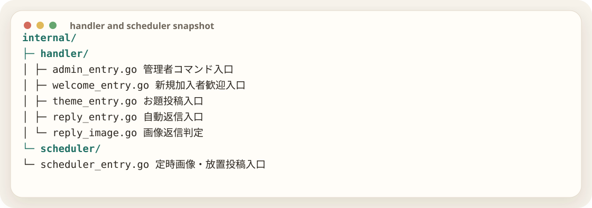

handlerとschedulerを読みやすくする
機能の全体像は Plugin機能一覧 にまとめてある。ここでは、その機能をコード上でどのように入口分離したかを扱う。
機能が増えると、handlerの中で何が起きているか分かりにくくなる。そこで、各機能の入口だけを薄く分離した。全面的なリファクタではなく、「まず入口を作る」方針にしたのがポイントだった。
作業者全部バラバラにした方がいい？
GPT最初から大改造せず、入口だけ分けましょう。既存処理は残し、FEATURESを見る関数を前段に置くのが安全です。

reply_entry.go は通常返信、welcome_entry.go は歓迎、theme_entry.go はお題、admin_entry.go は管理者コマンド。scheduler側には定時画像投稿と放置投稿の入口を置いた。
これにより、FEATURESでOFFになっている機能は入口で止まる。つまり、処理の奥まで入ってから分岐するのではなく、そもそも機能を起動させない。
この段階で、base-botは「全部入りだけど必要な分だけ動かせるPlugin」になった。